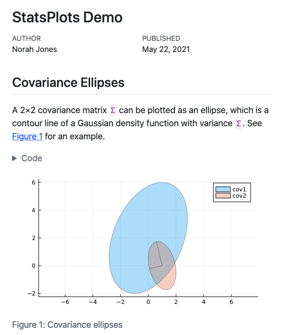
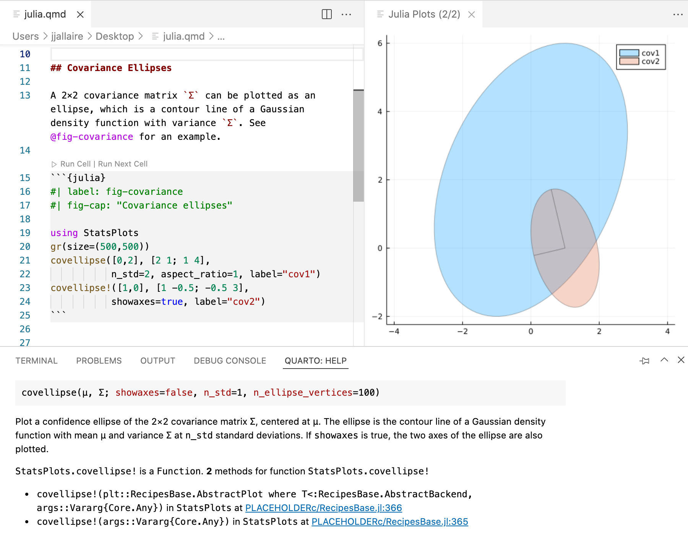

Using Julia
Overview
Quarto supports executable Julia code blocks within markdown. This allows you to create fully reproducible documents and reports—the Julia code required to produce your output is part of the document itself, and is automatically re-run whenever the document is rendered.
Quarto executes Julia code using the IJulia Jupyter kernel. Below we’ll describe how to install IJulia and related requirements but first we’ll cover the basics of creating and rendering documents with Julia code blocks.
Code Blocks
Code blocks that use braces around the language name (e.g. ```{julia}) are executable, and will be run by Quarto during render. Here is a simple example:
---
title: "Plots Demo"
author: "Norah Jones"
date: "5/22/2021"
format:
html:
code-fold: true
jupyter: julia-1.7
---
## Parametric Plots
Plot function pair (x(u), y(u)).
See @fig-parametric for an example.
```{julia}
#| label: fig-parametric
#| fig-cap: "Parametric Plots"
using Plots
plot(sin,
x->sin(2x),
0,
2π,
leg=false,
fill=(0,:lavender))
```You’ll note that there are some special comments at the top of the code block. These are cell level options that make the figure cross-referenceable.
This document would result in the following rendered output:

You can produce a wide variety of output types from executable code blocks, including plots, tabular output from data frames, and plain text output (e.g. printing the results of statistical summaries).
There are many options which control the behavior of code execution and output, you can read more about them in the article on Execution Options.
Rendering
Quarto will automatically run computations in any markdown document that contains executable code blocks. For example, the example shown above might be rendered to varoius formats with:
quarto render document.qmd # defaults to html
quarto render document.qmd --to pdf
quarto render document.qmd --to docxQuarto can also render any Jupyter notebook (.ipynb):
quarto render document.ipynbNote that the target file (in this case document.qmd) should always be the very first command line argument.
Note that when rendering an .ipynb Quarto will not execute the cells within the notebook by default (the presumption being that you already executed them while editing the notebook). If you want to execute the cells you can pass the --execute flag to render:
quarto render notebook.ipynb --executeInstallation
In order to render documents with embedded Julia code you’ll need to install the following components:
- Jupyter
- IJulia
- Revise.jl
We’ll cover each of these in turn below.
Jupyter
If you already have Python 3 and Jupyter installed in your environment, then proceed to the section below on installing the IJulia Kernel.
If you don’t yet have Python 3 on your system, we recommend you install a version using the standard installer from https://www.python.org/downloads/.
If you are in a fresh Python 3 environment, installing the jupyter package will provide everything required to execute Jupyter kernels with Quarto:
| Pkg. Manager | Command |
|---|---|
| Pip (Windows) |
|
| Pip (Mac/Linux) |
|
| Conda | |
You can verify that Quarto is configured correctly for Jupyter with:
quarto check jupyterQuarto will select a version of Python using the Python Launcher on Windows or system PATH on MacOS and Linux. You can override the version of Python used by Quarto by setting the QUARTO_PYTHON environment variable.
IJulia
IJulia is a Julia-language execution kernel for Jupyter. You can install IJulia from within the Julia REPL as follows:
using Pkg
Pkg.add("IJulia")Once you’ve installed IJulia Quarto has the basic components required to execute Julia cells.
Revise.jl
In addition to IJulia, you’ll want to install Revise.jl and configure it for use with IJulia. Revise.jl is a library that helps you keep your Julia sessions running longer, reducing the need to restart when you make changes to code.
Quarto maintains a persistent kernel daemon for each document to mitigate Jupyter start up time during iterative work. Revise.jl will make this persistent process robust in the face of package updates, git branch checkouts, etc. Install Revise.jl with:
using Pkg
Pkg.add("Revise")To configure Revise to launch automatically within IJulia, create a .julia/config/startup_ijulia.jl file with the contents:
try
@eval using Revise
catch e
@warn "Revise init" exception=(e, catch_backtrace())
endYou can learn more about Revise.jl at https://timholy.github.io/Revise.jl.
Workflow
You can author Quarto documents that include Julia code using any text or notebook editor. No matter what editing tool you use, you’ll always run quarto preview first to setup a live preview of changes in your document. Live preview is available for both HTML and PDF output. For example:
# preview as html
quarto preview document.qmd
# preview as pdf
quarto preview document.qmd --to pdf
# preview a jupyter notebook
quarto preview document.ipynbNote that when rendering an .ipynb Quarto will not execute the cells within the notebook by default (the presumption being that you already executed them while editing the notebook). If you want to execute the cells you can pass the --execute flag to render:
quarto render notebook.ipynb --executeYou can also specify this behavior within the notebook’s YAML front matter:
---
title: "My Notebook"
execute:
enabled: true
---VS Code
The Quarto Extension for VS Code provides a variety of tools for working with .qmd files in VS Code. The extension integrates directly with the Julia Extension to provide the following Julia-specific capabilites:
- Code completion
- Cell execution
- Contextual help

You can install the VS Code extension by searching for ‘quarto’ in the extensions panel or from the extension marketplace.
You can also use the VS Code notebook editor to create Julia notebooks that you will render with Quarto. The next section discusses using notebooks with Quarto in the context of Jupyter Lab, but the same concepts apply to VS Code.
Jupyter Lab
We could convert the simple document.qmd we used as an example above to a Jupyter notebook using the quarto convert command. For example:
quarto convert document.qmdIf we open this notebook in Jupyter Lab and execute the cells, here is what we see:

Note that there are three different types of cell here:
- The YAML document options at the top are in a Raw cell.
- The heading and explanation are in a Markdown cell.
- The Julia code and its output are in a Code cell.
When working in a Jupyter notebook, you can use quarto preview to provide a live preview of your rendered document:
quarto preview document.ipynbThe preview will be updated every time you save the notebook in Jupyter Lab.
Caching
Jupyter Cache enables you to cache all of the cell outputs for a notebook. If any of the cells in the notebook change then all of the cells will be re-executed.
To use Jupyter Cache you’ll want to first install the jupyter-cache package:
| Platform | Command |
|---|---|
| Windows | |
| Mac/Linux | |
To enable the cache for a document, add the cache option. For example:
---
title: "My Document"
format: html
execute:
cache: true
---You can also specify caching at the project level. For example, within a project file:
project:
type: website
format:
html:
theme: united
execute:
cache: trueNote that changes within a document that aren’t within code cells (e.g. markdown narrative) do not invalidate the document cache. This makes caching a very convenient option when you are working exclusively on the prose part of a document.
Jupyter Cache include a jcache command line utility that you can use to analyze and manage the notebook cache. See the Jupyter Cache documentation for additional details.
Rendering
You can use quarto render command line options to control caching behavior without changing the document’s code. Use options to force the use of caching on all chunks, disable the use of caching on all chunks (even if it’s specified in options), or to force a refresh of the cache even if it has not been invalidated:
# use a cache (even if not enabled in options)
quarto render example.qmd --cache
# don't use a cache (even if enabled in options)
quarto render example.qmd --no-cache
# use a cache and force a refresh
quarto render example.qmd --cache-refresh Alternatives
If you are using caching to mitigate long render-times, there are some alternatives you should consider alongside caching.
Disabling Execution
If you are working exclusively with prose / markdown, you may want to disable execution entirely. Do this by specifying the enabled: false execute option For example:
---
title: "My Document"
format: html
execute:
enabled: false
---Note that if you are authoring using Jupyter .ipynb notebooks (as opposed to plain-text .qmd files) then this is already the default behavior: no execution occurs when you call quarto render (rather, execution occurs as you work within the notebook).
Freezing Execution
If you are working within a project and your main concern is the cumulative impact of rendering many documents at once, consider using the freeze option.
You can use the freeze option to denote that computational documents should never be re-rendered during a global project render, or alternatively only be re-rendered when their source file changes:
execute:
freeze: true # never re-render during project renderexecute:
freeze: auto # re-render only when source changesNote that freeze controls whether execution occurs during global project renders. If you do an incremental render of either a single document or a project sub-directory then code is always executed. For example:
# render single document (always executes code)
quarto render document.qmd
# render project subdirectory (always executes code)
quarto render articlesLearn more about using freeze with projects in the article on managing project execution.
Kernel Selection
You’ll note in our first example that we specified the use of the julia-1.7 kernel explicitly in our document options (shortened for brevity):
---
title: "StatsPlots Demo"
jupyter: julia-1.7
---If no jupyter kernel is explicitly specified, then Quarto will attempt to automatically discover a kernel on the system that supports Julia.
You can discover the available Jupyter kernels on your system using the quarto check command:
quarto check jupyterKernel Daemon
To mitigate the start-up time for the Jupyter kernel Quarto keeps a daemon with a running Jupyter kernel alive for each document. This enables subsequent renders to proceed immediately without having to wait for kernel start-up.
The purpose of the daemon is to make render more responsive during interactive sessions. Accordingly, no daemon is created when documents are rendered without an active tty or when they are part of a batch rendering (e.g. in a Quarto Project).
Note that Quarto does not use a daemon by default on Windows (as some Windows systems will not allow the socket connection required by the daemon).
You can customize this behavior using the daemon execution option. Set it to false to prevent the use of a daemon, or set it to a value (in seconds) to determine the period after which the daemon will timeout (the default is 300 seconds). For example:
execute:
daemon: falseexecute:
daemon: 60Note that if you want to use a daemon on Windows you need to enable it explicitly:
execute:
daemon: trueCommand Line
You can also control use of the Jupyter daemon using the following command line options:
# use a daemon w/ default timeout (300 sec)
quarto render document.qmd --execute-daemon
# use a daemon w/ an explicit timeout
quarto render document.qmd --execute-daemon 60
# prevent use of a daemon
quarto render document.qmd --no-execute-daemonYou can also force an existing daemon to restart using the --execute-daemon-restart command line flag:
quarto render document.qmd --execute-daemon-restart This might be useful if you suspect that the re-use of notebook sessions is causing an error.
Finally, you can print extended debugging information about daemon usage (startup, shutdown, connections, etc.) using the --execute-debug flag:
quarto render document.qmd --execute-debug